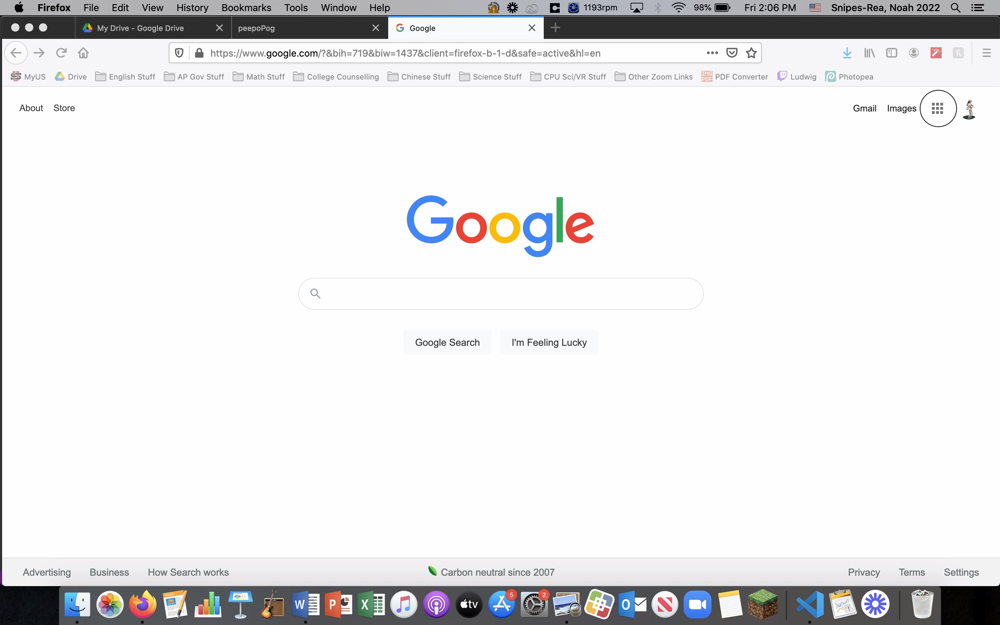
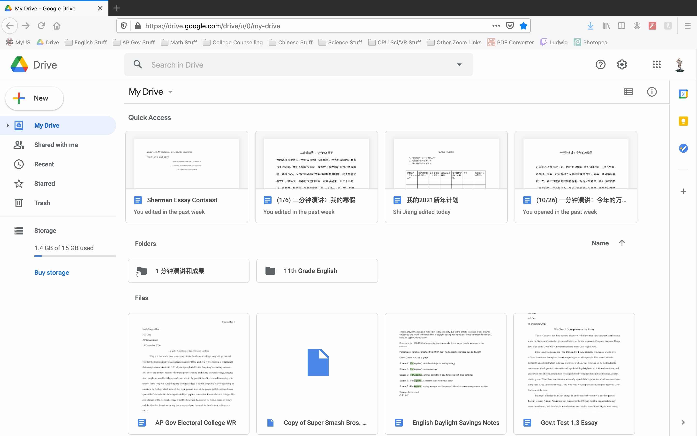
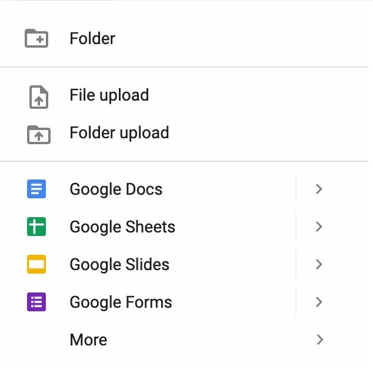
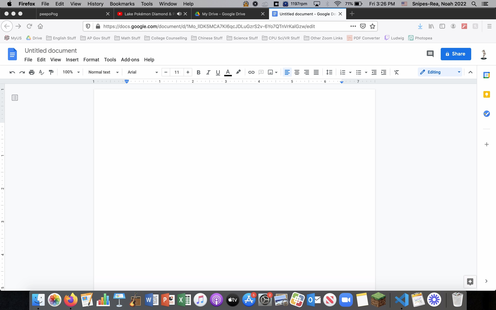

How to Create a Google Word Document
By: Noah Snipes-Rea
Have you ever wondered how to create a Google Word Document? Well wonder no more! Follow these simple steps to
find out!
Required Steps:
- Open up google.com.
- Make sure you have a Google account and are signed into it.
Don't have one? Click here!
- Here is an image of what the Google homepage looks like:

Notice the circled icon in the top
right of the screen
that looks like this:

Click on that icon.
- Scroll until you get to the Google Drive image that looks like this: .
- You should be brought to a page with the word "Drive" in the top left of the screen, as well as a bar on
the left side of the screen. Here's a picture of what a drive looks like, although yours might be empty.

- If you look at the image above, you'll notice a box that looks like this:
Click on that and a bar that looks
like this:

Next, click on the words that say Google Docs.
-
After doing this you should be brought to an empty word document that should look like this:

And
congrats! You successfully created a Google Doc!